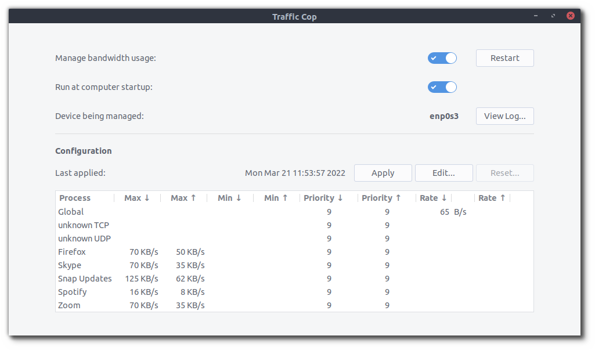

Traffic Cop: Manage bandwidth usage by app or process
Features
- Set priority, upload bandwidth, and/or download bandwidth for the whole system or for any process.
- See current config (displayed in “B/s” regardless of unit used in the config file).
- See live upload and download rates globally and for each managed process.
- Default config provided that covers common use cases.

Limitations
Traffic Cop relies on nethogs to track network usage. As of version 0.8.5-2 (default in Wasta 20.04), nethogs does not track UDP packets, which are used by many VoIP apps, including Zoom and Skype, and thus Traffic Cop also doesn’t show reliable upload and download rates for UDP traffic. However, Traffic Cop, does properly manage this UDP traffic. You can confirm it for yourself if you have a pay-per-MB internet plan and check the counter provided by your ISP periodically during a call to verify that the rate you’ve set is being properly applied.
More information
Traffic Cop manages bandwidth usage via a systemd service by:
- managing traffic over the device that is currently connected to the internet
- setting global download and upload bandwidth limits
- setting per-process bandwidth limits
- prioritizing processes
Use cases
- Use the bandwidth limits if you pay for data by the MB; e.g. you don’t want your audio or video calls to use more data than they absolutely need.
- Use prioritization if your available bandwidth is limited; e.g. you want to ensure that your audio calls go through, even if you’re also downloading updates.
Modifying the default bandwidth management configuration
The default config limits several processes known to use a significant amount of bandwidth and gives some explanatory info on how to tailor it to your needs. It is found at /usr/share/traffic-cop/traffic-cop.yaml and is copied to /etc/traffic-cop.yaml on first run if it doesn’t already exist. The config can be edited using the “Edit…” button in the app window, or, for those who love the terminal, by opening it with a terminal text editor such as nano using elevated privileges, e.g.:
$ sudo nano /etc/traffic-cop.yaml
This file is not overwritten during installation or update, so any changes you make are preserved.
More info can be found in the Traffic Cop repository’s README.md file.
About
Traffic Cop is based on the TrafficToll python3 package developed by cryzed, but it’s built as a debian package and modified to run as a systemd service.
It’s composed of 4 parts:
- The traffictoll python3 package whose executable is installed at /usr/bin/tt.
- A config file installed at /etc/traffic-cop.yaml.
- A wrapper script installed at /usr/bin/tt-wrapper that:
- selects the current networking device
- starts the tt executable
- monitors changes in the connection’s status
- A service unit file called traffic-cop.service that configures systemd to manage the process.
This app uses an icon based on the “traffic-police” icon created by Freepik and found at https://www.flaticon.com/.